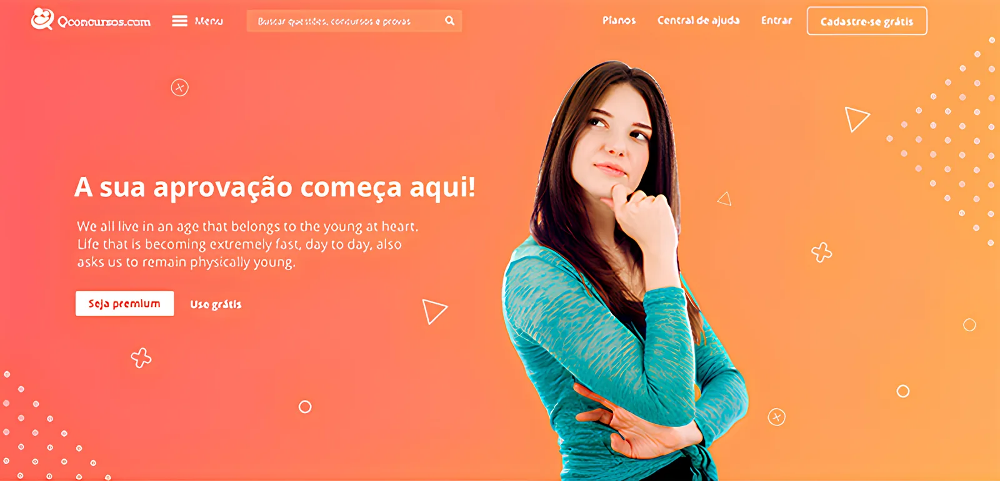
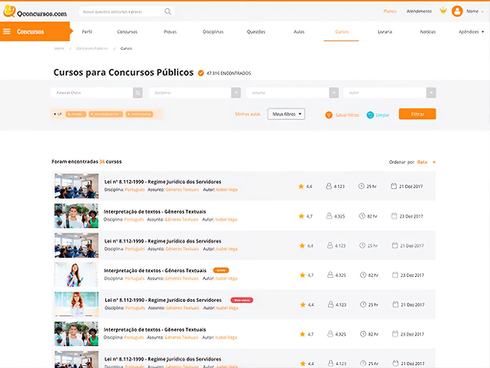
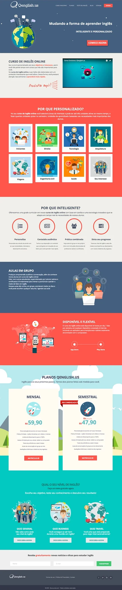
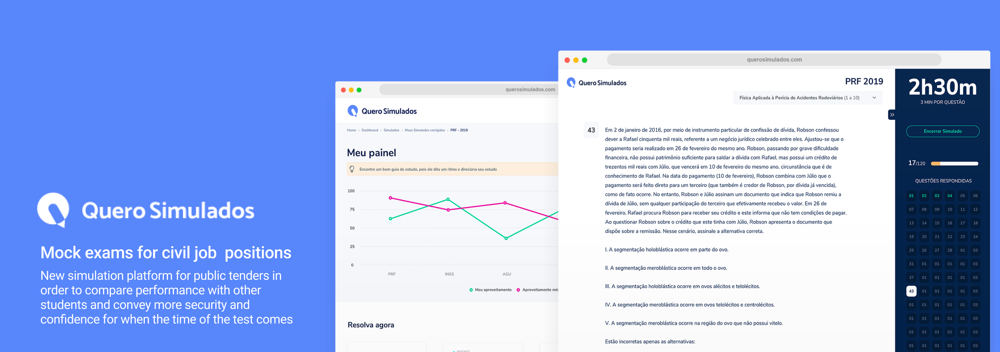
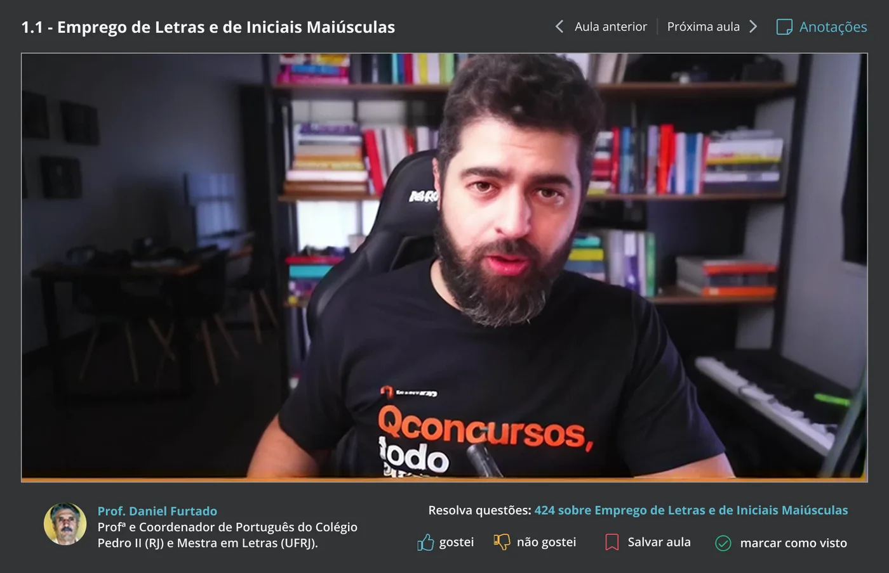
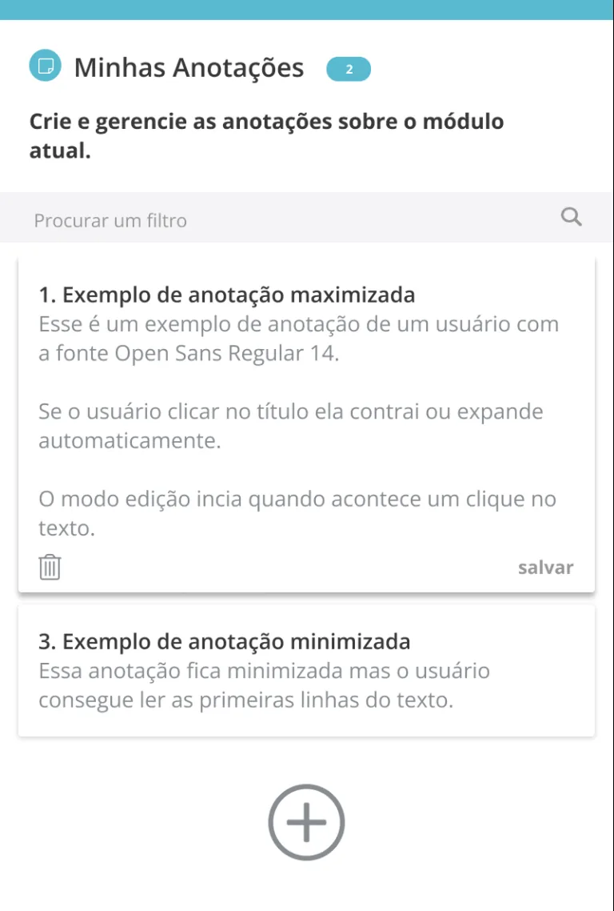
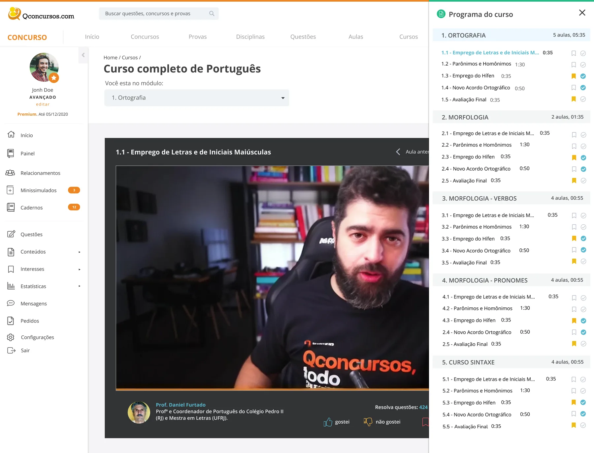

From 600K to 10M: Designing for Scale at Brazil's Largest Exam-Prep EdTech
Five years building, refining, and scaling Brazil's leading civil-service exam-prep platform — ending with a strategic redesign that helped position the company for acquisition.

The project at a glance.
I joined QConcursos in 2014 as the company's first dedicated designer — when the platform had around 600,000 registered users. Over the next five years, the role evolved through three distinct phases: a generalist early period where I helped ship the company's first satellite product; a marketing-led phase designing landing pages, campaigns, and conversion experiments; and a final period embedded directly in the product and innovation teams, where I contributed to the design system, launched a new product line, and led the platform's most significant redesign.
This case study focuses on that final redesign — a deep rethinking of the core course-consumption experience, validated through qualitative research and shipped to millions of active users in late 2018. By then, the platform had grown to over 3.75 million students and 605,000 curated questions. The redesign was part of a broader push to prepare the product for acquisition — which happened in June 2021, when Yduqs Group (owner of Estácio, IBMEC and Damásio) acquired QConcursos for R$208 million.

The journey.
Generalist in the Trenches
As the company's first dedicated designer, I worked across whatever was needed — from interface design to HTML/CSS front-end work. My work in this phase focused on the main platform: building and refining the question-answering experience, improving navigation, and shipping UI improvements directly with the founders. Every week was a different problem.

New Products, Led End to End
As the platform matured, I moved into a product incubation role — leading design from concept for four new products that expanded QConcursos beyond exam prep: Redação Perfeita (essay correction), Ordem Perfeita (bar exam prep), Concursos no Brasil (content discovery), and Qenglish.us (English learning). Each was designed end to end, from positioning to core flows, while staying consistent with the main platform.



Product & Innovation
Embedded in the product and innovation teams, I contributed to the company's first design system (pattern inventory and component guidelines), launched Quero Simulados (a standalone mock exam product), redesigned the subscription plan pages for desktop and mobile, and led the full redesign of the core course-consumption experience — the Deep Dive below.

The course-consumption redesign — the most complex and impactful work of the five years — is detailed below.
Course Page Redesign.
A full redesign of the core course-consumption experience — the feature millions of users spent the most time in.
Business context
By 2018, QConcursos had grown into Brazil's dominant exam-prep platform — but the core course page, the feature users spent the most time in, was built on a legacy architecture. Despite strong engagement metrics, support tickets consistently flagged usability issues and missing features. With an acquisition on the horizon, the product team had both business pressure and a rare window to invest in a rethink.

Validating with support data
Before designing anything, I analyzed customer support tickets from the past six months and ran a short in-product survey. Both sources told the same story: users were frustrated by the video player, struggled to find supplemental material, and had no way to take notes or track their progress through the course syllabus. These weren't hunches — they were the most-mentioned themes across hundreds of messages.
- Difficulty keeping track of course progress
- Not knowing where to resume studies after an interruption
- No way to organize or retrieve notes
- Unclear how long a course or module would take
- Confusing navigation between modules
New video player
The original player was a basic embed with minimal controls. The redesigned experience introduced full-screen mode, playback speed controls, chapter navigation, and a visible progress bar — matching what users expected from modern streaming platforms and removing the need to context-switch to external players.

Redesigned course cards
Each lesson card was rebuilt from scratch with a clearer visual hierarchy: lesson number, title, duration, completion state, and a direct-play affordance. The new cards made it trivially easy to orient oneself in the curriculum, track remaining work, and resume a partially-watched lesson.

Notes system
Survey results showed that a significant percentage of users were taking notes in separate notebooks or text files because the platform offered nothing. We introduced a persistent notes panel — anchored to the course sidebar — where users could write, edit, and review timestamped notes per lesson without ever leaving the page.

Auxiliary material with more visibility
PDFs, exercises, and external links had been buried in a collapsible section that most users never found. We surfaced them into a persistent accordion panel with clear labels and download counts — making supplemental material feel like a first-class part of the learning experience rather than an afterthought.

Course syllabus
The old platform had no visible syllabus — users couldn't tell how long a course was, how many modules it contained, or what was covered before buying or starting. We designed a collapsible module tree with lesson counts, durations, and visual completion states — giving users the mental map they'd always been missing.

The brief for this project wasn't "redesign the page" — it was "eliminate the friction our users are complaining about." That meant restraint was the design strategy. Every element that survived into the new design had to earn its place by directly solving a documented problem. We didn't add features for the sake of modernity; we removed the ceiling on features users already expected.
The redesigned experience shipped to all users in late 2018. Post-launch qualitative feedback through the same support channels showed a sharp decline in the top-three friction complaints. The redesigned course page became the template that subsequent platform updates were measured against — and was part of the product story presented during the acquisition process in 2019.

Key choices and why.
Validate with real friction before designing
Support tickets and a short survey surfaced a clear priority stack. We didn't brainstorm what to redesign — the users told us. This created alignment with stakeholders from day one.
Refine over reinvent — scope discipline
We deliberately scoped out a full visual rebrand. The goal was behavioral: remove friction, add missing features. This kept the project shippable under acquisition timeline pressure.
Design for millions, not for power users
Every shortcut and edge case we cut was a deliberate call. The notes system, the syllabus, and the auxiliary panel weren't new ideas — they were the baseline any learner expects. We just finally built them properly.
What I took away.
Starting with the user's words, not a brainstorm
Mining support tickets and running a quick survey before opening any design file meant my brief was written by the people who actually used the product. Stakeholder alignment was almost effortless because I wasn't proposing my opinion — I was reporting what users were saying.
Post-launch measurement gaps
We shipped on qualitative signal and didn't have the instrumentation to track behavioral outcomes like completion rate changes or notes adoption. The success story had to be told through the absence of complaints rather than the presence of data — a structural gap I'd address differently today with pre-launch event tracking setup.
The most effective redesign is the one that ships
Scoping this as a feature-fidelity project rather than a visual rebrand was the right call for the timeline. It taught me that "refine, don't reinvent" often produces the most measurable impact — especially when the product already has millions of daily users who depend on muscle memory.
Designing under acquisition pressure
The context that gave us the budget to do this work was also the context that compressed the timeline and shaped which bets we could make. Navigating that tension — delivering something rigorous within business-driven constraints — was the most durable professional skill I built at QConcursos.